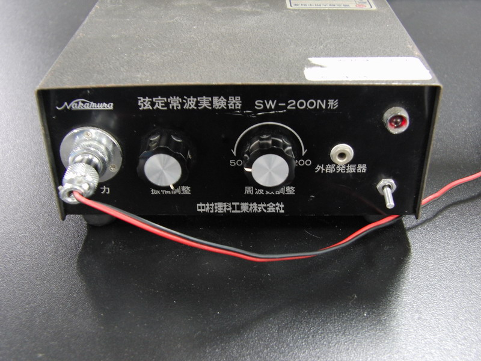
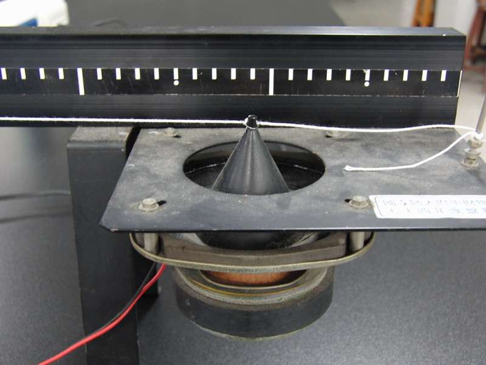
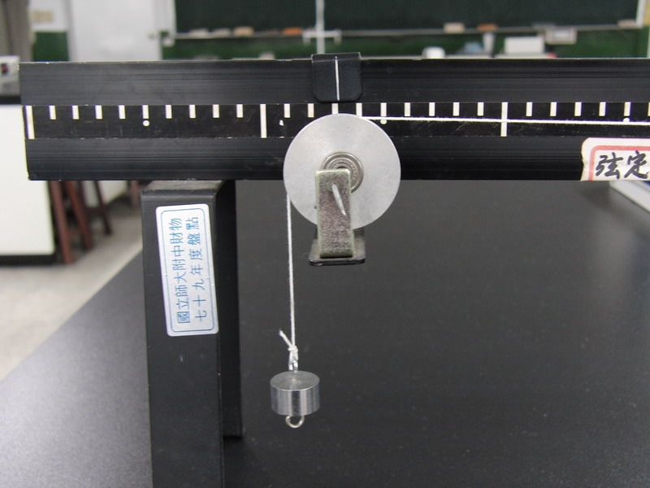
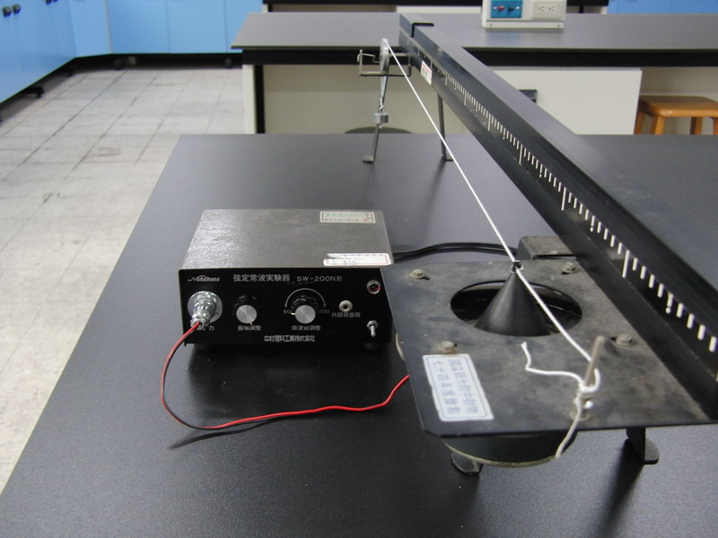
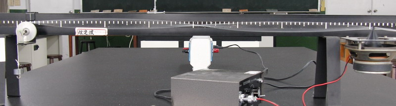
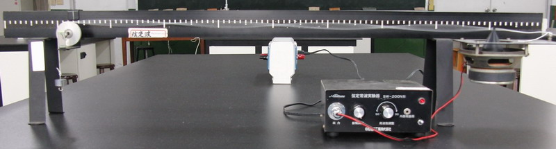
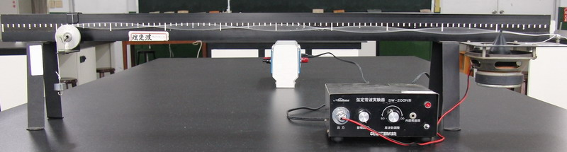

駐波產生器
↑看看駐波是如何產生的吧！
------------------------------ 以下是器材介紹 ------------------------------

↑訊號產生器，可以驅動喇叭，可調振幅、頻率。

↑負責產生振動的喇叭，使弦線產生駐波。

↑弦線另一端的重錘，負責提供繩子張力。

↑主裝完成成圖。
------------------------------ 以下產生駐波 ------------------------------
n=2
 n=3
n=3
n=4
n=5
========= 感 謝 ========
感謝 師大物理系 黃福坤 教授提供可以高速錄影的相機： CASIO EX-F1